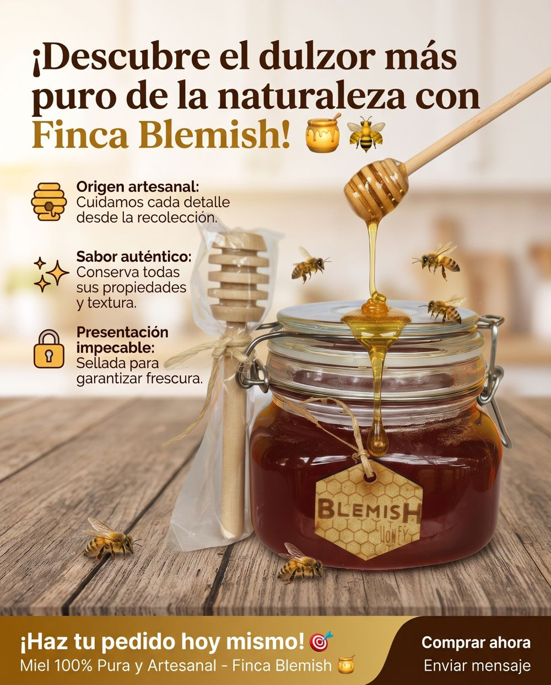

← Volver al catálogo · Mieles

Miel en frasco
Frasco de vidrio con tapa hermética de clic y palito dispensador de madera · contenido neto 300 g
$55.000 IVA incluido
La misma miel de abejas multifloral, cruda y sin aditivos de nuestras colmenas en Jamundí, Valle del Cauca, en una presentación especial. Viene en un frasco de vidrio con tapa hermética de clic que la mantiene bien sellada, e incluye un palito dispensador de madera para servirla sin regueros. Sabor auténtico e intenso, del campo directo a tu mesa. Ideal para regalar o para lucir en la mesa.
Características
- Origen: Finca Blemish, Quinamayo / Playa Amarilla, Jamundí, Valle del Cauca (Colombia)
- Tipo: miel multifloral
- Miel cruda
- Contenido neto: 300 g
- Ingrediente: 100% miel de abejas, sin aditivos
- Envase: frasco de vidrio con tapa hermética de clic (cierre de sellado)
- Incluye: palito dispensador de miel en madera
Beneficios
- Sabor auténtico e intenso de la miel multifloral del Valle del Cauca
- Cierre hermético que la mantiene sellada después de abrirla
- Palito de madera para servir la miel con facilidad
- Presentación ideal para regalo o para la mesa
- Del campo directo a tu mesa: apoyas lo local
Modo de uso y conservación
- Usa el palito de madera para servirla sobre pancakes, waffles o en tu té.
- Endulza tus mañanas, tus bebidas, frutas, yogur y postres.
- Después de usarla, cierra la tapa de clic y guárdala en un lugar fresco y seco, lejos de la luz directa del sol. No requiere refrigeración.
- Es normal que la miel cruda se cristalice con el tiempo; para volverla líquida, calienta el frasco a baño maría suave.